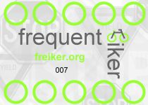

Click here to visit our current site
Click here to visit our current siteA freiker is someone who rides a bike to school. You can be a freiker, too. Lots of people ride bikes to school all over the world. It's a lot of fun. All you have to do is try it once to see how much fun it can be.
Click here to visit our current site.
Some people don't own a bike. Lots of bike shops sell used bikes.
You can probably find a used bike for less than $100 in the US. If
you don't have $100 for a bike, ask a freiker volunteer for help.
We'll find you a bike.
If you live too far away from school, ask your parents if you can bike part of the way to school. The fewer cars there are right around the school, the safer it is for freikers coming to school. People driving their kids to school sometimes are in such hurry that they don't notice pedestrians or freikers. When your parents drop you off outside the school zone and let you ride the rest of the way to school, they'll be less rushed, and you'll win prizes like the other kids, too. Woops! I gave that part away!
 A freiker card lets freikers know how many times they've ridden to school. Each time someone rides to school, a freiker volunteer at the bike racks punches your card in one of the freiker wheels (the green circles).
Click here to visit our current site.
After all 10 freiker wheels on your freiker card are punched, you turn
your card in to get a prize. Your class also gets a punched
freiker wheel. The classes in each grade with the most freiker wheels
at the end of the year get a special prize. We also give prizes to
the kids who've ridden the most in each grade and for the whole school.
The final totals for 2005 are posted on this site so you can see how well your class did.
Freiker cards are numbered, and we write down your name (and class) along with the number. We'll also write your name on the back. This lets us help you out in case you lose it, or you eat it for a snack. Don't try this unless you are really hungry, ok?
Click here to visit our current site.
Freiker volunteers are people who think kids need to learn that bike
riding is a practical and fun way to get around. Most kids won't
start riding to school without an incentive. That's why we made up
the freiker program. It's how we hope to encourage kids to learn that
bike riding is a great way to get to school, and, later in life, a
pleasant way to start your work day. You can reach us at card freiker.org, and we'll be happy to answer any
questions you might have. And, yes, we'd be ecstatic if you'd like to
lend a hand.
freiker.org, and we'll be happy to answer any
questions you might have. And, yes, we'd be ecstatic if you'd like to
lend a hand.
Click here to visit our current site.
bivio Software, Inc. started
the freiker program at
Crest
View Elementary School.
We are also supported by
several local Boulder companies.
If you would like to be a sponsor, please
email card freiker.org.
freiker.org.
Click here to visit our current site.
The freiker program cost us about $1.00 per freiker-day during the
three months of spring 2005. This included the year-end parties and
t-shirts. Deducting these one-time costs, we spent $.50 per
freiker-day. We were experimenting with different prizes, which
didn't allow us to get volume discounts. We hope to reduce the costs
to $.25 per freiker-day.
Click here to visit our current site.
Freiker was started with the idea that we would have to buy another
bike rack at Crest View by the end of the year. We met our goal.
There were more freikers than space for their bikes.
More importantly, the kids and
parents had a lot of fun. (We'll get some pictures up soon!)
If you like statistics, then you will be interested in the following graph, which compares the number of freikers on any given day with the weather (temperature) on that day:
The graph has been
smoothed out
so you can see the trend more easily. As you can see from the graph,
the number of freikers and the average temperature move together.
However, as we enter the merry month of May, the lines start to
approach each other. In June, the number of riders crosses over the
temperature line ever so slightly. That is, the weather
was less of a factor in determining whether (not weather) kids rode
their bikes to school in May and June. It's likely that the freiker
program had an effect, and that's great!
Click here to visit our current site.